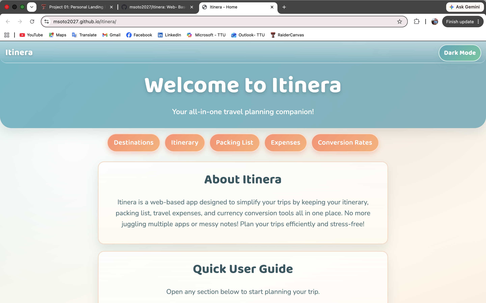

Project Archives
Project Archives is my personal portfolio website where I showcase my programming projects, skills, and experience. It serves as a central place to document my growth as a developer.
Hello! My name is Marisol Soto, and I am majoring in Computing Applications at Texas Tech University. I enjoy learning about web development, programming, and technology. I am always looking for opportunities to expand my skills by creating projects that solve real-world problems and improve my experience as a developer.
Project Archives is my personal portfolio website where I showcase my programming projects, skills, and experience. It serves as a central place to document my growth as a developer.

Itinera is a travel website designed to help users discover destinations, plan trips, and organize travel information in one convenient place.
FitIQ is a knowledge base for working out that I am currently developing. The goal is to provide reliable fitness information, workout guidance, and educational resources for users looking to improve their health and training.